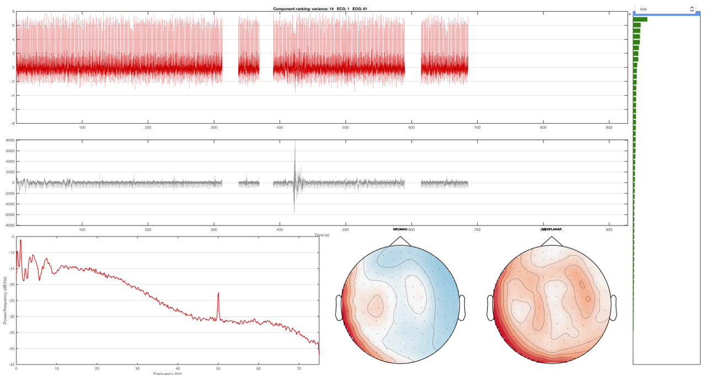
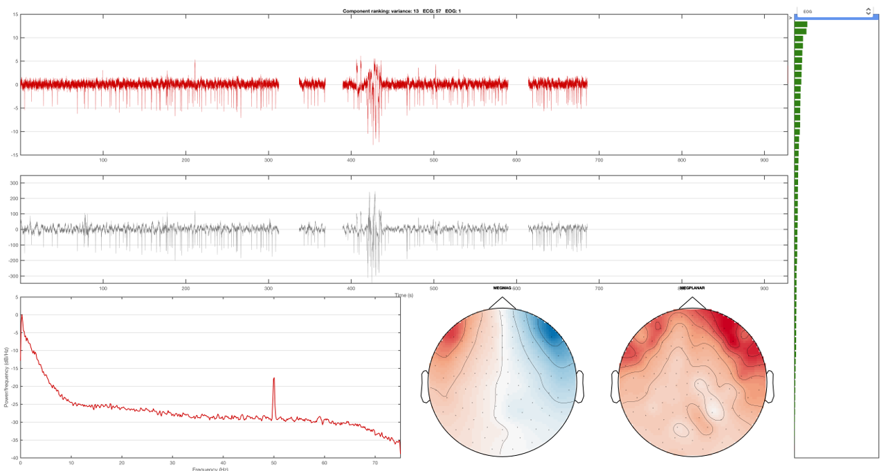
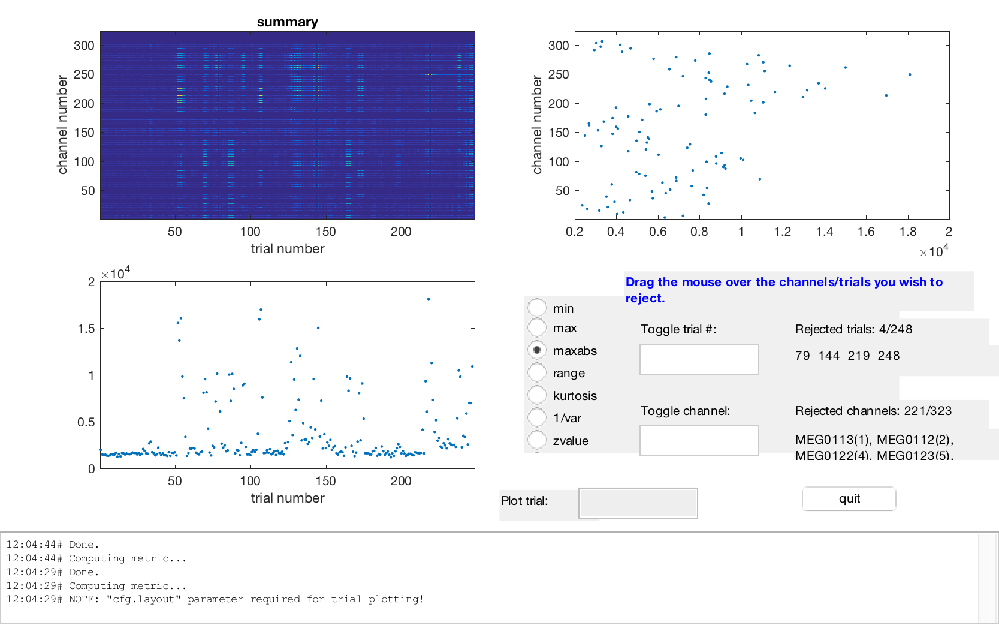
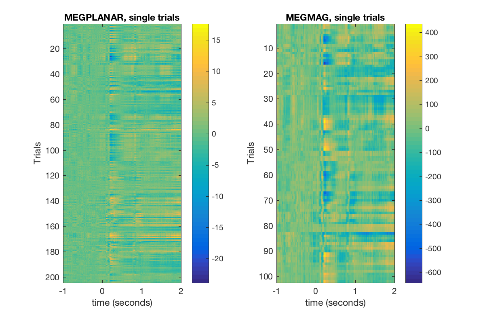
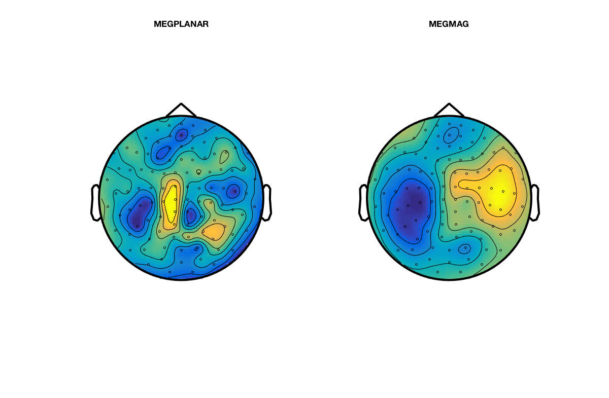
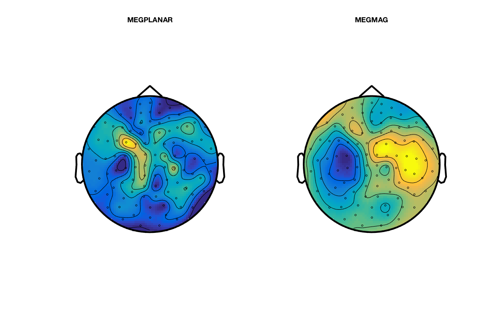

Introduction to manual preprocessing in OSL
In this practical/template script we will work with a single subject's data from an emotional faces task (data courtesy of Susie Murphy). This is contained in the downloadable zip.file available online.
Note that this contains the fif file: fifs/sub1_face_sss.fif that has already been SSS Maxfiltered and downsampled to 250 Hz.
In this example we will take this fif file and run it through a manual preprocessing pipeline
MWW 2013, adapted and updated by RB 2017
Contents
- SETUP THE MATLAB PATHS
- SPECIFY DIRECTORIES AND FILES FOR THIS ANALYSIS
- CONVERT FROM FIF TO AN SPM MEEG OBJECT:
- LOAD THE SPM M/EEG OBJECT
- SOME BASICS ABOUT SPM OBJECTS
- DOWNSAMPLE
- LOAD THE DOWNSAMPLED SPM MEEG OBJECT
- FILTERING
- OSLVIEW
- AFRICA WITH MANUAL COMPONENT REJECTION
- EPOCHING OF DATA
- LOAD THE EPOCHED SPM MEEG OBJECT
- VISUAL ARTEFACT REJECTION
- EXAMINE THE CLEANED EPOCHED DATA
- PLOTTING EVENT-RELATED TOPOGRAPHIES AT DEFINED LATENCIES
- SOME EXERCISES
SETUP THE MATLAB PATHS
osl_startup;
Warning: Duplicate directory name: /Applications/MATLAB_R2016a.app/toolbox/stateflow/stateflow
SPECIFY DIRECTORIES AND FILES FOR THIS ANALYSIS
% directory where the data is: datadir = fullfile(osldir,'example_data','preproc_example','manual'); % this is the directory the analysis files will be stored in: workingdir=[datadir]; cmd = ['mkdir ' workingdir]; unix(cmd); % make dir to put the results in clear fif_files spm_files_basenames;
mkdir: /Applications/osl/example_data/preproc_example/manual: File exists
Specify a list of the existing fif files for subjects Note that here we only have 1 subject, but more generally there would be more than one, e.g.: fif_files{1}=[testdir '/fifs/sub1_face_sss.fif']; fif_files{2}=[testdir '/fifs/sub2_face_sss.fif']; etc...
fif_files{1}=[datadir '/fifs/sub1_face_sss.fif'];
Setup a list of SPM MEEG object file names to be created, in the same order as spm_files and fif_files: Note that here we only have 1 subject, but more generally there would be more than one, e.g.: spm_files{1}=[workingdir '/spm8_meg1.mat']; spm_files{2}=[workingdir '/spm8_meg1.mat']; etc...
spm_files_basenames{1}=['spm_meg1.mat'];
CONVERT FROM FIF TO AN SPM MEEG OBJECT:
The fif file that we are working with is sub1_face_sss.fif. This has already been max-filtered for you and downsampled to 250Hz.
This will produce a histogram plot showing the number of events detected for each code on the trigger channel. The codes used on the trigger channel for this experiment were:
1 = Neutral face 2 = Happy face 3 = Fearful face 4 = Motorbike 18 = Introduction screen 11 = Break between blocks 19 = Midway break 12 = Green fixation cross (response trials) 13 = Red fixation cross (following green on response trials) 14 = Red fixation cross (non-response trials)
For example, there should be 120 motorbike trials, and 80 of each of the face conditions
for subnum = 1:length(fif_files), % iterates over subjects spm_files{subnum}=[workingdir '/' spm_files_basenames{subnum}]; end if(length(fif_files)>0), S2=[]; for i=1:length(fif_files), % loops over subjects S2.fif_file=fif_files{i}; S2.spm_file=spm_files{i}; S2.trigger_channel_mask='0000000000111111'; % binary mask to use on the trigger channel % The conversion to SPM will show a histogram of the event codes % and correspond to those listed below in the epoching section [D spm_files{i}] = osl_convert_script(S2); end; end; % Note that this spmfile is the output from the conversion: spm_files{1}
SPM12: spm_eeg_convert_4osl (v6190) 12:31:49 - 18/04/2017 ======================================================================== SPM12: spm_eeg_convert_4osl (v6190) 12:31:49 - 18/04/2017 ======================================================================== 306 MEG channel locations transformed Reading /Applications/osl/example_data/preproc_example/manual/fifs/sub1_face_sss.fif ... Opening raw data file /Applications/osl/example_data/preproc_example/manual/fifs/sub1_face_sss.fif... Range : 74500 ... 306499 = 298.000 ... 1225.996 secs ...

LOAD THE SPM M/EEG OBJECT
Set filenames used in following steps
for subnum = 1:length(spm_files), % iterates over subjects spm_files{subnum}=[workingdir '/' spm_files_basenames{subnum}]; end % load in the SPM MEEG object subnum = 1; D = spm_eeg_load(spm_files{subnum}); % look at the SPM object. Note that it is continuous data, with 232000 time % points at 250Hz. We will epoch the data later. D
SPM M/EEG data object Type: continuous Transform: time 1 conditions 323 channels 232000 samples/trial 1 trials Sampling frequency: 250 Hz Loaded from file /Applications/osl/example_data/preproc_example/manual/spm_meg1.mat ...
SOME BASICS ABOUT SPM OBJECTS
The above output gives you some basic information about the M/EEG object that has been loaded into workspace. Note that the data values themselves are memory-mapped from spm_meg1.dat and can be accessed by indexing the D object (e.g, D(1,2,3) returns the field strength in the first sensor at the second sample point during the third trial).
D.ntrials % will return the number of trials. % Typing D.conditions % will show the list of condition labels for each trial. D.condlist % will display a list of unique condition labels. % If you type D.chanlabels; % , you will see the order and the names of the channels. D.chantype; % will display the type for each channel. D.size
ans =
1
ans =
'Undefined'
...will show the size of the data matrix (for channels, samples and trials respectively). The size of each dimension separately can be accessed by D.nchannels, D.nsamples and D.ntrials. Note that although the syntax of these commands is similar to those used for accessing the fields of a struct data type in Matlab what?s actually happening here is that these commands evoke special functions called ?methods? and these methods collect and return the requested information from the internal data structure of the D object. The internal structure is not accessible directly when working with the object. This mechanism greatly enhances the robustness.
% Type methods('meeg') % for the full list of methods performing operations with the object. % For help on any method, type help meeg/method_name to get help about a method.
Methods for class meeg: Contents fieldnames isfield save badchannels fname islinked sconfounds badsamples fnamedat link selectchannels badtrials frequencies meeg selectdata blank fsample modality sensors chanlabels ftraw montage size chantype fttimelock move subsasgn ...
DOWNSAMPLE
(particularly important if movement compensation is used, as this stops you from downsampling when running Maxfilter - but worth doing anyway)
% Set filenames used in following steps for subnum = 1:length(spm_files), % iterates over subjects spm_files{subnum}=[workingdir '/' spm_files_basenames{subnum}]; end % By default, the filtered data set will get the prefix 'f' (preceding the % first one). S=[]; for subnum=1:length(spm_files), % iterates over subjects S.D=spm_files{subnum}; S.fsample_new = 150; % in Hz D = spm_eeg_downsample (S); end
SPM12: spm_eeg_downsample (v6016) 12:31:59 - 18/04/2017 ========================================================================
LOAD THE DOWNSAMPLED SPM MEEG OBJECT
Set filenames used in following steps
for subnum = 1:length(spm_files), % iterates over subjects spm_files{subnum}=[workingdir '/d' spm_files_basenames{subnum}]; end % load in the SPM MEEG object subnum = 1; D = spm_eeg_load(spm_files{subnum}); % look at the SPM object. Note that it is continuous data, with 139200 time % points at 150Hz. We will epoch the data later. D
SPM M/EEG data object Type: continuous Transform: time 1 conditions 323 channels 139200 samples/trial 1 trials Sampling frequency: 150 Hz Loaded from file /Applications/osl/example_data/preproc_example/manual/dspm_meg1.mat ...
FILTERING
Note that there are some large artefacts. Use the oslview functionality to remove the bad epochs (see the osl_example_africa.m practical for how to do this).
%set filenames used in following steps for subnum = 1:length(spm_files), % iterates over subjects spm_files{subnum}=[workingdir '/d' spm_files_basenames{subnum}]; end
First we do a bit of high-pass filtering to remove the worst of the trends The filtered data set will get the prefix 'f' (preceding the first one).
S2=[];
S2.D=spm_files{1};
S2.band='high';
S2.freq=0.1;
D=spm_eeg_filter(S2);
SPM12: spm_eeg_filter (v5876) 12:32:03 - 18/04/2017 ========================================================================
OSLVIEW
Now load oslview. This data has some bad artefacts in. Mark the epochs at around 325s, 380s and 600s as bad. Marking is done by right-clicking in the proximity of the event and click on 'Mark Event'. A first click (green dashed label) marks the begin of a bad period, a nother second click indicates the end (in red). Also, mark the really bad artefacts at the end of the the experiment from about 650 secs to the end. This will mean that we are not using about half of the data. But with such bad artefacts this is the best we can do. We can still obtain good results with what remains. push disk button to save to disk (same name)
figure; D=oslview(D); keyboard; snapnow;

AFRICA WITH MANUAL COMPONENT REJECTION
Run AFRICA ICA denoising. AFRICA uses independent component analysis to decompose sensor data into a set of maximally independent time courses. Using this framework, sources of interference such as eye-blinks, ECG artefacts and mains noise can be identified and removed from the data. % % In this practical we will use manual artefact rejection by looking at the time courses and sensor topographies of each component and rejecting those that correlate with EOG and ECG measurements. The user interface displays the time course, power spectrum and sensor topography for each component. These components are sorted based on one of a number of metrics, which you can toggle using the dropdown menu.
% Set new SPM MEEG object filenames to be used in following steps for subnum = 1:length(spm_files), % iterates over subjects spm_files{subnum}=[workingdir '/fd' spm_files_basenames{subnum}]; end
Scroll through components using the cursor keys. Identify the two components that correlate with the EOG and ECG measurements and mark them for rejection using the red cross. NB: Just close the window when finished to save your results.
figure; for subnum = 1:length(spm_files) [dirname,filename] = fileparts(spm_files{subnum}); S = []; S.D = spm_files{subnum}; S.logfile = 1; S.ica_file = fullfile(dirname,[filename '_africa']); S.used_maxfilter = 1; S.ident.func = @identify_artefactual_components_manual; S.to_do = [1 1 1]; S.ident.artefact_chans = {'EOG','ECG'}; osl_africa(S); end
Number of signals: 306 Number of samples: 87824 Calculating covariance... Reducing dimension... Selected [ 62 ] dimensions. Smallest remaining (non-zero) eigenvalue [ 2.25263 ] Largest remaining (non-zero) eigenvalue [ 19270.6 ] Sum of removed eigenvalues [ 7.95623 ] [ 99.9849 ] % of (non-zero) eigenvalues retained. Whitening... ...


Now, after having done AFRICA denoising, let's have a look at the differences. AFRICA saved the cleaned data by default with 'A' preceding all other prefixes. However, it also saved an online montage to the current D object. This is what we will use now to have a look.
for subnum = 1:length(spm_files), % iterates over subjects spm_files{subnum}=[workingdir '/fd' spm_files_basenames{subnum}]; end
We load in the SPM M/EEG object
subnum = 1;
D = spm_eeg_load(spm_files{subnum});
We load the data in, just switching between RAW and AFRICA denoised version.
D_raw=D.montage('switch',0); D_africa=D.montage('switch',1);
Now we plot some data to check the differences between raw and denoised data.
figure; subplot(2,1,1); plot(D_raw.time(1:10000),D_raw(308,1:10000)) title('ECG channel') xlim([10 20]);xlabel('Time (s)') subplot(2,1,2); plot(D_raw.time(1:10000),D_raw(306,1:10000)) title('ECG contaminated channel') xlim([10 20]); hold on; plot(D_africa.time(1:10000),D_africa(306,1:10000),'r'); xlim([10 20]);xlabel('Time (s)'); legend({'Raw' 'AFRICA denoised'})

The first part of this figure plots the ECG channel included in the recording as reference. In the second part we plot two versions of the same channel, one that shows the raw time series, so without any preprocessing and the other with AFRICA run on it. You can see that there is some commonalities between the ECG and some part of the raw time-series in the data, but that this is gone in the denoised version. So AFRICA has removed most of the ECG contaminated parts in the signal. If this is not the case in your plot, make sure you have indeed removed the first independent component in AFRICA.
EPOCHING OF DATA
Does preliminary epoching for the purpose of finding outliers This is not the final epoching. Instead this sets up the epoch definitions, and performs a temporary epoching for the purpose of doing semi-automated outlier trial rejection (before running the fully automated OAT). The epoch definitions and the continuous data will be kept and passed into OAT. This is so that things like temporal filtering (which is dones as part of OAT) can be done on the continuous data, before the data is epoched inside OAT. Note that this will also remove those trials that overlap with the bad epochs identified using OSLview. Here the epochs are set to be from -1000ms to +2000ms relative to the triggers in the MEG data. We also specify the trigger values for each of the 4 epoch types of interest (motorcycle images, neutral faces, fearful faces, happy faces). The codes used on the trigger channel for this experiment were: 1 = Neutral face 2 = Happy face 3 = Fearful face 4 = Motorbike 18 = Introduction screen 11 = Break between blocks 19 = Midway break 12 = Green fixation cross (response trials) 13 = Red fixation cross (following green on response trials) 14 = Red fixation cross (non-response trials) Note that we're only interested in the first 4 event codes listed here for today's workshop.
Set filenames used in following step
for subnum = 1:length(spm_files), % iterates over subjects spm_files{subnum}=[workingdir '/fd' spm_files_basenames{subnum}]; end % Iterating over subjects for i=1:length(spm_files), % define the trials we want from the event information S2 = []; S2.D = spm_files{i}; D_continuous=spm_eeg_load(S2.D); D_continuous=D_continuous.montage('switch',0); pretrig = -1000; % epoch start in ms posttrig = 2000; % epoch end in ms S2.timewin = [pretrig posttrig]; % event definitions S2.trialdef(1).conditionlabel = 'Neutral face'; S2.trialdef(1).eventtype = 'STI101_down'; S2.trialdef(1).eventvalue = 1; S2.trialdef(2).conditionlabel = 'Happy face'; S2.trialdef(2).eventtype = 'STI101_down'; S2.trialdef(2).eventvalue = 2; S2.trialdef(3).conditionlabel = 'Fearful face'; S2.trialdef(3).eventtype = 'STI101_down'; S2.trialdef(3).eventvalue = 3; S2.trialdef(4).conditionlabel = 'Motorbike'; S2.trialdef(4).eventtype = 'STI101_down'; S2.trialdef(4).eventvalue = 4; S2.reviewtrials = 0; S2.save = 0; S2.epochinfo.padding = 0; S2.event = D_continuous.events; S2.fsample = D_continuous.fsample; S2.timeonset = D_continuous.timeonset; [epochinfo.trl, epochinfo.conditionlabels, S3] = spm_eeg_definetrial(S2); % do epoching S3=[]; S3 = epochinfo; S3.D = D_continuous; D = osl_epoch(S3); end;
SPM12: spm_eeg_definetrial (v6182) 12:37:06 - 18/04/2017 ---------------------------------------------------------------- SPM12: spm_eeg_epochs (v6183) 12:37:06 - 18/04/2017 ======================================================================== Data type is missing or incorrect, assigning default.
LOAD THE EPOCHED SPM MEEG OBJECT
set filenames used in following step. Prefix 'e' is the default prefix for epoched data, followed by the prefixes of preceding preprocessing steps.
for subnum = 1:length(spm_files), % iterates over subjects spm_files{subnum}=[workingdir '/efd' spm_files_basenames{subnum}]; end D = spm_eeg_load(spm_files{subnum}); % look at the SPM object. Note that this is now EPOCHED data D; % Display a list of trial types: D.condlist; % Display time points (in seconds) per trial D.time; % Identify trials of a certain type using the indtrial function. E.g.: motorbike_trls = indtrial(D,'Motorbike');
Identify channels of certain types using the meegchannels function. E.g. identify the channel indices for the planar gradiometers and for the magnetometers (what you have available may depend on the actual MEG device) (Note that you can use 'MEGMAG' to get the gradiometers, and D.chantype gives you a list of all channel types by index).
planars = D.indchantype('MEGPLANAR'); magnetos = D.indchantype('MEGMAG');
We can access the actual MEG data using the syntax: D(channels, samples, trials). E.g. plot a figure showing all the trials for the motorbike condition in the 135th MEGPLANAR channel. Note that the squeeze function is needed to remove single dimensions for passing to the plot function, and D.time is used to return the time labels of the within trial time points in seconds.
figure; plot(D.time,squeeze(D(planars(135),:,motorbike_trls))); xlabel('time (seconds)'); % We can average over all the motorbike trials to get a rudimentary ERF % (Event-Related Field): figure; plot(D.time,squeeze(mean(D(planars(135),:,motorbike_trls),3))); xlabel('time (seconds)');


As you will notive, the ERFs look pretty bad. However, we should bear in mind that this data is averaging over all data including noisy data segments, channels and trials. To do better than this we need to perform outlier rejection and exclude bad trials (see below).
VISUAL ARTEFACT REJECTION
This runs a Fieldtrip interactive tool.
- Pass over the first interactive figure as it is the EOG channel - so just press the "quit" button.
This will bring up another interactive figure which will show the magnetometers. You can choose the metric to display - it is best to stick to the default, which is variance. This metric is then displayed for the different trials (bottom left), the different channels (top right), and for the combination of the two (top left). You need to use this information to identify those trials and channels with high variance and remove them.
- Remove the worst channel (with highest variance) by drawing a box around it in the top right plot with the mouse. - Now remove the trials with high variance by drawing a box around them in the bottom left plot. - Repeat this until you are happy that there are no more outliers.
- Press "quit" and repeat the process for the gradiometers.
%set filenames used in following step for subnum = 1:length(spm_files), % iterates over subjects spm_files{subnum}=[workingdir '/efd' spm_files_basenames{subnum}]; end % Run the visual artifact rejection for i=1:length(spm_files), S2=[]; S2.D = spm_files{i}; S2.time_range=[-0.2 0.4]; D2=osl_rejectvisual(S2); end;
No bad channels currently marked. 121 trials of 360 have already been marked as bad. %%% 1. EOG %%% mapping condition label "Motorbike" to condition code 1 mapping condition label "Happy face" to condition code 2 mapping condition label "Fearful face" to condition code 3 mapping condition label "Neutral face" to condition code 4 the input is raw data with 323 channels and 239 trials showing a summary of the data for all channels and trials computing metric [---------------------------------------------------------] ...

EXAMINE THE CLEANED EPOCHED DATA
We can now repeat the average over all the motorbike trials with the bad trials removed to get a rudimentary ERF (Event-Related Field).
% Set new SPM MEEG object filenames to be used in following steps for subnum = 1:length(spm_files), % iterates over subjects spm_files{subnum}=[workingdir '/efd' spm_files_basenames{subnum}]; end % load in SPM MEEG object subnum = 1; D = spm_eeg_load(spm_files{subnum}); % switch to montage zero (raw) D_raw=D.montage('switch',0) planars = D_raw.indchantype('MEGPLANAR') magnetos = D_raw.indchantype('MEGMAG') % List the marked bad channels D_raw.badchannels % List the marked bad trials D_raw.badtrials % Identify the motorbike trials. Note that indtrial includes good AND bad % trials, so bad trials need to be excluded. good_motorbike_trls = setdiff(D_raw.indtrial('Motorbike'),D.badtrials);
SPM M/EEG data object Type: single Transform: time 4 conditions 323 channels 451 samples/trial 360 trials Sampling frequency: 150 Hz Loaded from file /Applications/osl/example_data/preproc_example/manual/efdspm_meg1.mat ...
here we switch to online montage 1. Montages are linear combinations of the sensor data (= montage 0) that can be used to do basically any linear operation and be able to switch between different linear mixings Keep in mind that switching is not enough, you need to assign the switched montage a variable (if same it gets overwritten). Without output it will switch, but the D object will not actually change.
D_africa=D.montage('switch',1)
SPM M/EEG data object Type: single Transform: time 4 conditions 306 channels 451 samples/trial 360 trials Sampling frequency: 150 Hz Loaded from file /Applications/osl/example_data/preproc_example/manual/efdspm_meg1.mat ...
Now let us plot a cleaned rudimentary ERF. After having excluded the bad samples from oslview and the rejected trials from the artifact rejection, data should look much better. Now, even for the epoched data, the online montage for the AFRICA denoised data is still applicable. So let's see how much the task-related activity differs between 'raw' and AFRICA denoised data. You will find that due to averaging there is less of a difference.
figure; subplot(1,2,1);plot(D_raw.time,squeeze(mean(D_raw(planars(135),:,good_motorbike_trls),3))); xlabel('time (seconds)');ylim([-10 6]) ylabel(D.units(planars(1))); hold on; subplot(1,2,1);plot(D_raw.time,squeeze(mean(D_africa(planars(135),:,good_motorbike_trls),3))); xlabel('time (seconds)');ylim([-10 6]) legend({'Raw' 'AFRICA denoised'}) subplot(1,2,2);plot(D_raw.time,squeeze(mean(D_raw(magnetos(49),:,good_motorbike_trls),3))); xlabel('time (seconds)');ylim([-300 500]) ylabel(D.units(magnetos(1))); hold on; subplot(1,2,2);plot(D_africa.time,squeeze(mean(D_africa(magnetos(49),:,good_motorbike_trls),3))); xlabel('time (seconds)');ylim([-300 500]) legend({'Raw' 'AFRICA denoised'})

Plot a cleaned rudimentary ERF for all sensors
figure; subplot(1,2,1);imagesc(D.time,[],squeeze(mean(D_africa([planars(:)],:,good_motorbike_trls),3))); xlabel('time (seconds)'); ylabel('Trials');colorbar title('MEGPLANAR, single trials') subplot(1,2,2);imagesc(D.time,[],squeeze(mean(D_africa([magnetos(:)],:,good_motorbike_trls),3))); xlabel('time (seconds)'); ylabel('Trials');colorbar title('MEGMAG, single trials')
PLOTTING EVENT-RELATED TOPOGRAPHIES AT DEFINED LATENCIES
To plot a cleaned rudimentary ERF topography at a relatively late latency, do:
topo=squeeze(mean(D(:,188,good_motorbike_trls),3));
figure;sensors_topoplot(D,topo,{'MEGPLANAR' 'MEGMAG'},1);
reading layout from file /Applications/osl/layouts/neuromag306mag.lay reading layout from file /Applications/osl/layouts/neuromag306mag.lay
Plot the same rudimentary ERF topography for AFRICA denoised data
topo2=squeeze(mean(D_africa(:,188,good_motorbike_trls),3));
figure;sensors_topoplot(D_africa,topo2,{'MEGPLANAR' 'MEGMAG'},1);
reading layout from file /Applications/osl/layouts/neuromag306mag.lay reading layout from file /Applications/osl/layouts/neuromag306mag.lay
SOME EXERCISES
If you want to play around with the data and the cleaning approaches presented here, have a look at what happens when you remove more independent components during AFRICA. Also you can have a look at the interaction of oslview and AFRICA. For example, if you do not cut out the bad segments during oslview rejection, can you still get decent ERFs in the end? How many independent components would you need to remove to get some ERFs and are they still comparable to the ones generated earlier?